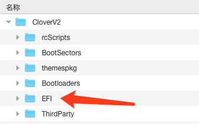
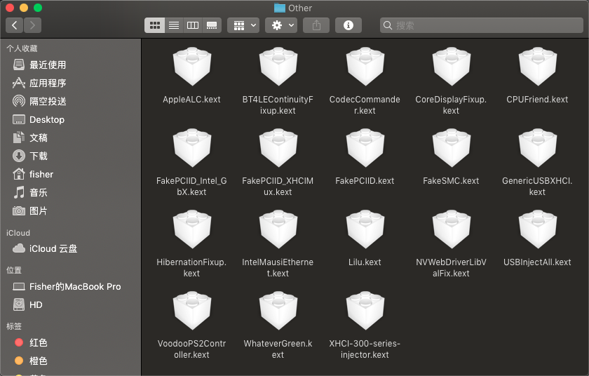
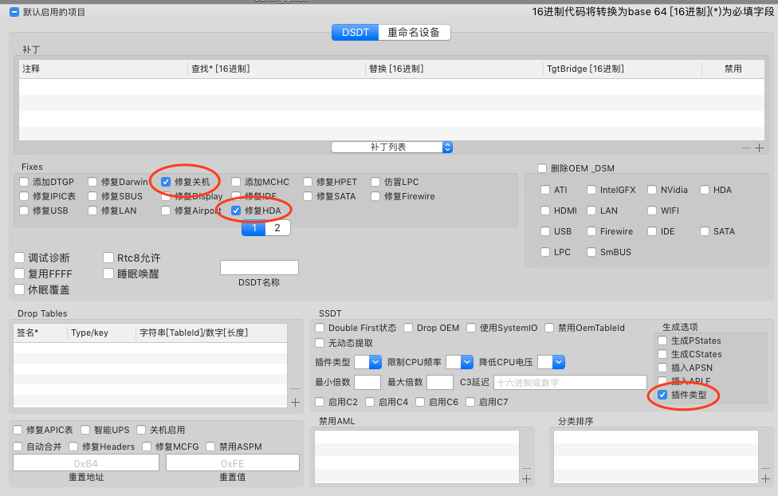
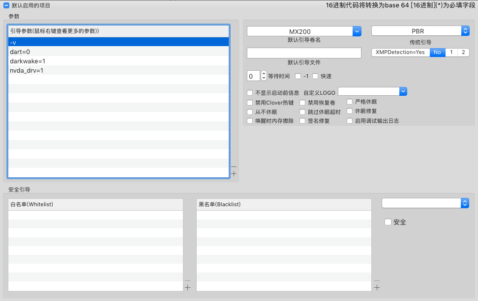
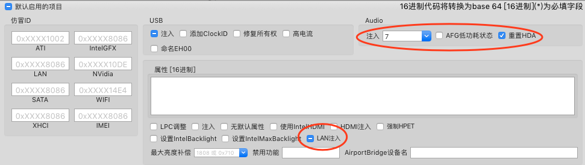
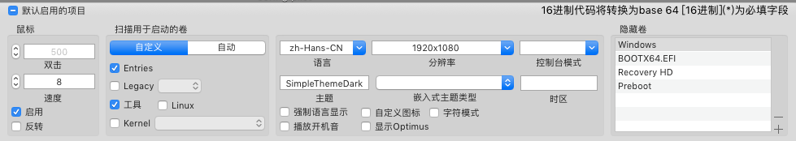
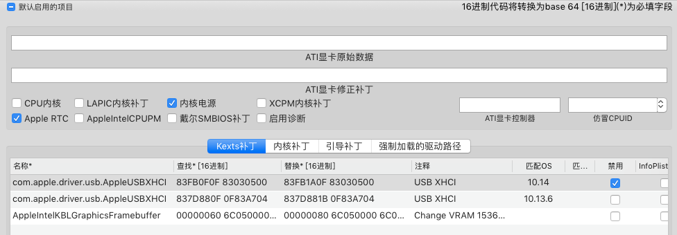
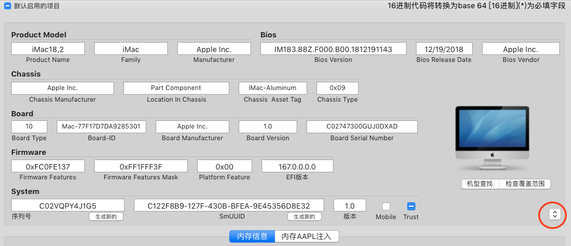
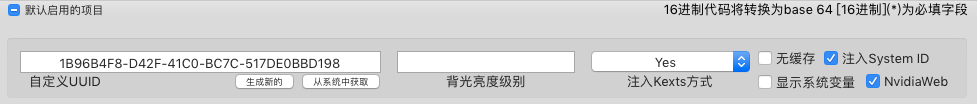

前言
在今年3月份的时候，我用一块机械硬盘装了一次黑苹果。当时装系统的时候走了不少的弯路：卡加号，卡显卡驱动加载，进系统黑屏……历经千辛万苦，终于装成功了，但是机械硬盘的体验着实不咋地。于是双十一的时候先是买了一块PM981a，拿到手后还没装上电脑呢，一查发现PM981系列装黑苹果会卡死，因为主控的问题。好家伙，退货花了12块，等退款又花了几天，这几天之内我专心研究了一下Clover EFI，黑苹果相关的主板、驱动配置，自己弄了一套适合自己机型的Clover EFI配置。前天新固态到了之后就开始装机，第一次启动的时候提示机型设置的太新了，不兼容10.13.6，然后我换了一套17年的iMac机型，剩下的安装一气呵成
这篇博客是用来记录我的Clover EFI配置的过程
硬件信息
不同的硬件需要的驱动不一样，可以自己上网查查硬件需要什么驱动，一般查型号+Hackintosh就能找到相关的资料
我的硬件配置如下：
| 硬件类型 | 型号 |
|---|---|
| 主板 | Asus Rog Strix B360-i Mini ITX |
| 处理器 | Intel Core i5-8500 |
| 内存 | Crucial By Micron DDR4 2666MHz 8GB + Corsair LPX DDR4 3000MHz 8GB(运行在2666MHz) |
| 显卡 | Nvidia GeForce GTX 1060 3GB |
| 硬盘 | Asgard AN2 NVMe 250GB |
型号接近的或者同一个系列的应该可以通用，但有一些需要特别的配置，比如华硕主板需要勾选Fix Shutdown，不同声卡注入ID不同……
EFI配置
EFI用于引导系统的启动，在Hackintosh中，Clover EFI还负责向macOS中注入我们添加的驱动
下载Clover
前往GitHub中的Clover Bootloader Release中下载最新版的Clover，解压之后我们会看到如下的文件目录：

我们只将其中的EFI文件夹解压出来，接下来我们要添加适合自己的驱动
添加驱动
接下来我们要添加黑苹果必须的驱动，macOS的驱动都以kext为后缀名，我们需要将其放在EFI/CLOVER/kexts/Other/文件夹中
我们需要的驱动基本都能在GitHub或者Rehabman的仓库中找到，可以在Github或者Google中直接搜索驱动的名称，一般第一个链接就是仓库地址
驱动的列表及其功能介绍如下，来自daliansky的GitHub仓库，根据我的配置查找相应的驱动：
| 驱动名称(名称排序) | 功能 |
|---|---|
| AppleALC.kext | 声卡注入框架 |
| BT4LEContinuityFixup.kext | 博通网卡AirDrop、Handoff功能修复，说不定以后会换网卡，先添加了 |
| CodecCommander.kext | 解决睡眠唤醒之后声卡无声问题 |
| CPUFriend.kext | 注入动态电源数据 |
| FakePCIID_Intel_GbX.kext | 不清楚作用，但与FakePCIID在同一个包中，所以就放进来了 |
| FakePCIID_XHCIMux.kext | 老版本的USB驱动 |
| FakePCIID.kext | 硬件ID仿冒驱动 |
| FakeSMC.kext | 仿冒SMC设备驱动，黑苹果必备驱动 |
| GenericUSBXHCI.kext | 通用的USB3.0驱动 |
| HibernationFixup.kext | 修复睡眠后无法唤醒、死机、黑屏等问题 |
| IntelMausiEthernet.kext | Intel有线网卡驱动 |
| Lilu.kext | 驱动注入框架，AppleALC, WhateverGreen, VirtualSMC等驱动的依赖 |
| NVWebDriverLibValFix.kext | 修复Nvidia Web驱动安装时提示Lib库错误的问题 |
| VoodooPS2Controller.kext | 键盘、鼠标、触摸板万能驱动 |
| WhateverGreen.kext | 显卡核心驱动，已经合并了AMD、Nvidia、Intel显卡修复的驱动 |
| XHCI-300-series-injector.kext | 对应B360主板的SATA修复 |
| USBInjectAll.kext | 修复USB3.0 USB3.1的U盘无法识别的问题 |
我的机型所需的驱动就是以上的列表，添加驱动之后我的文件夹如下图所示：

配置config.plist
CLOVER文件夹中已经给我们提供了一份config-sample.plist文件，我并没有基于这份配置文件进行修改，而是使用了3月份的时候，第一次成功吃到黑苹果的config.plist文件。我比较建议从网上找一份和自己型号相似的配置文件，然后基于那份配置文件再进行修改，这样子可以避免很多弯路
首先我们需要下载Clover Configurator，这个软件用来图形化配置config.plist文件，有Mac版和Win版，我使用的是Mac版，下载地址在这里
打开
Clover Configurator，点击左下角，使用Clover Configurator打开配置文件ACPI设置：对于我的主板，我需要勾选
修复关机，修复HDA，SSDT的生成选项中勾选插件类型
引导参数设置：默认引导卷名修改为自己想要默认使用的卷，右边的框填
PBR-v：启动啰嗦模式，安装的时候方便查看失败原因，安装启动成功后可以去掉dart=0：具体功能不清楚darkwake=1：修复华硕主板声卡ASUS SUPREMEFX S1220A无声的问题nvda_drv=1：启用Nvidia Web Driver驱动
设备设置：勾选
USB注入、Audio注入值修改为7，同时勾选重置HDA、勾选LAN注入
引导界面设置：我的配置如下，可以根据自己需要修改

内核和驱动补丁设置：这里面的参数我照用了之前的配置，没做任何修改

机型设置：根据自己的配置以及要安装的系统版本进行配置，选择与自己配置最为接近的型号，并且所选型号支持将要安装的系统
点击右下角选择机型，然后点击
检查覆盖范围，保证使用的序列号在苹果官网无法查到。如果查到了就点击左下角按钮生成新的序列号
系统设置：点击生成一个
UUID，勾选注入System ID和NavidiaWeb
保存配置文件，将其命名为config.plist并放在COLVER文件夹下。至此EFI的配置就完成了，接下来写入EFI分区之后就可以开始安装测试了
替换EFI文件
将系统镜像写入U盘之后，U盘会有一个隐藏的EFI分区，我们使用工具将其挂载，打开分区，将里面的EFI文件夹备份出来，然后把我们刚配置好的EFI文件夹放进去，就可以开始系统的安装了